Carved and themed
Series
Finite sets. When the count is done, the series closes. Status lines are how the old site left them, not a promise that a spot is open today.

Jazzy Buskers
Shallow carving on Buskers only. Instruments and players, color from anodizing, across the Busker blade shapes. Backbars, clips, and hardwar…
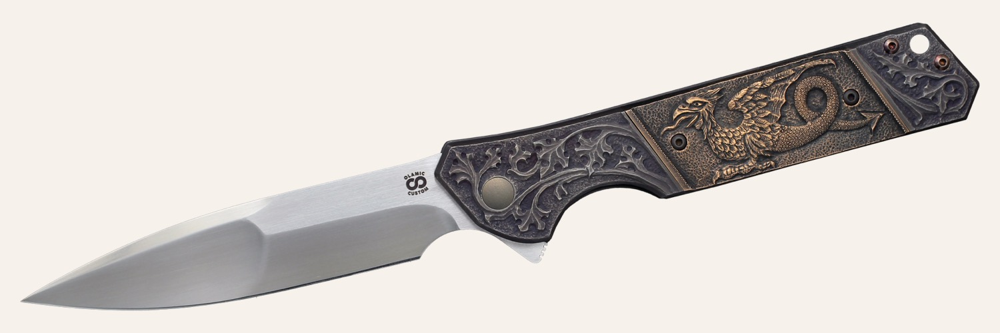
Punk'd Rainmakers
Three Rainmakers in bronze: Diesel, Steam, and Electro. A small series used to try finishes on bronze.…
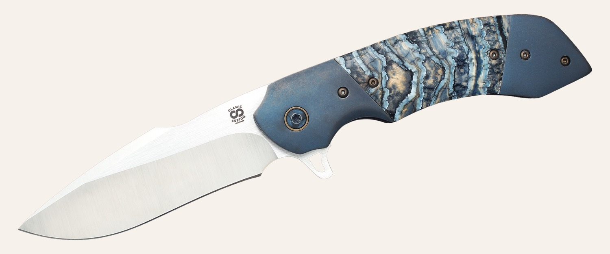
Americana
United States history, started in bronze on the liner locks. The old page left the reading of the portraits to you. The Chief and Chief Jr. …
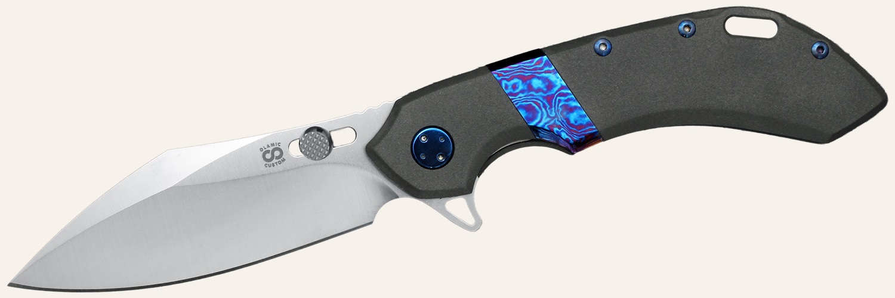
Dragon Inlays
Bronze dragon inlays on the Wayfarer 247, so a carved depth sits in a titanium finish. Six dragons, different blade shapes and finishes. Num…
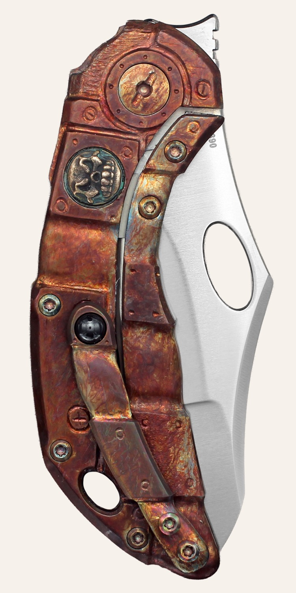
Day of the Dead
Shallow carving, color from anodizing, on the Busker. Olamic is in California, and the series is that local calendar done in titanium. Three…
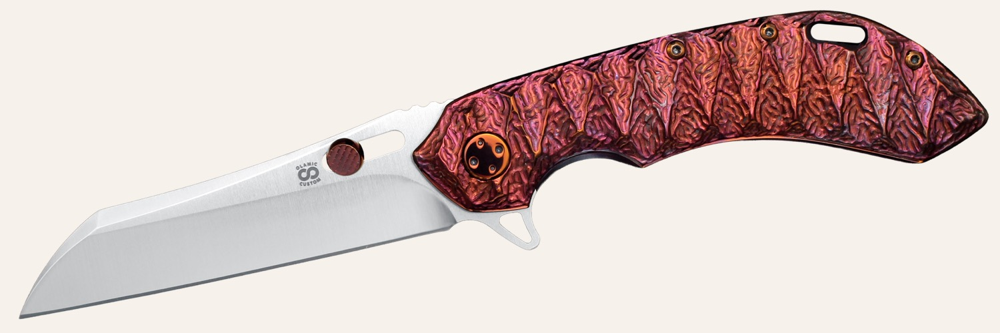
Ancient Civilizations
Themes, images, and cultures from a few thousand years back, carved in bronze and titanium, on the frame locks.…
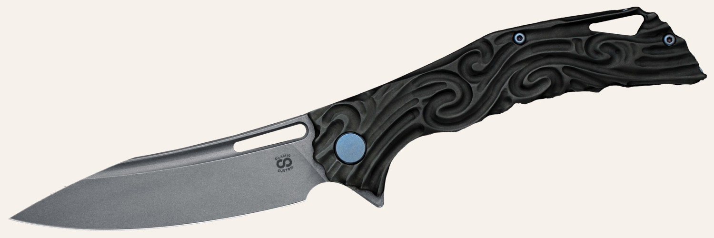
Sundry & Solitary
Knives built for a person, a gift, a test, or a joke, and not repeated. The old page showed Eyepatch Time, Seven Skull Swish, Tiger on Bronz…
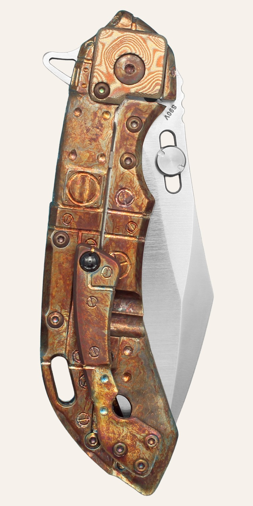
Thematic Skulls
Skulls that do not share a motif. Each one has its own. The old page's sold list includes Techno Is Dead, Jester's Last Trick, Under Pressur…

Vampy Buskers
Four Buskers, four vampires, each with a distinct fang. Orpheus, Zagan, Azazel, and Armand. All sold.…
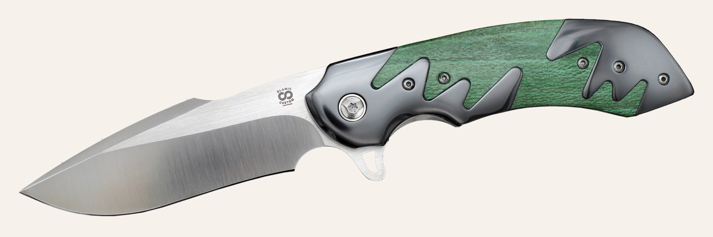
World History Greats
People who stayed in the record, carved in bronze. Sold on the old page: King Sargon, Genghis Khan, Sun Tzu, King Solomon, Leonardo da Vinci…

Heroes & Villains
Comic color, laid on with 2400 Series GunKote over carving, on the 247, the Busker, and the Swish. Sold names include the Joker, Batman, and…

Halloween
Olamic had been doing Halloween editions since 2016. In 2018 the carved series started, limited to two knives that year, with a titanium pum…
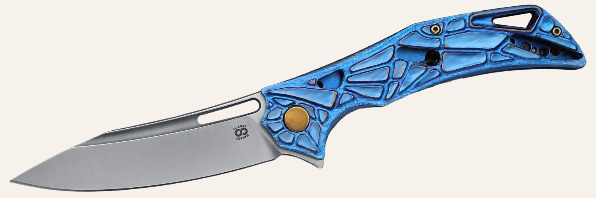
Christmas
Late 2018, carved pieces coated with Pinstriping by Rat. Santa and Santa's Helper were the first two. The page left two spots for 2019.…
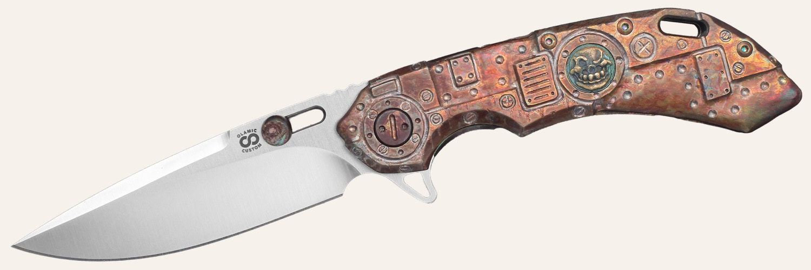
War Helmets
Wayfarer 247 only. Historic, national, or cultural skulls in war helmets. Six knives, six finishes, all sold.…
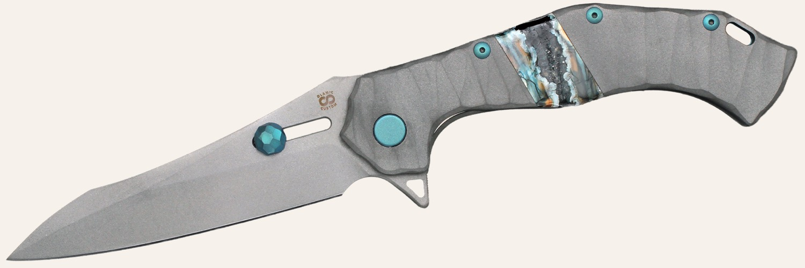
Art of War
Fighters the shop wanted remembered. Sold: Spartans, Samurai, Lacedaemon, Viking, and Bogatyr. Open to every model, and finished.…
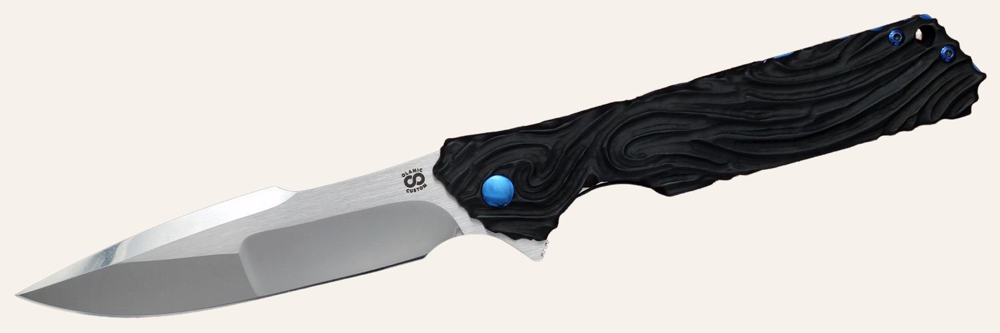
Machines of Time
Vehicles, ten knives, most of the themes already named. Below the Surface was sold. Still listed: On the Rails, Through the Clouds, On Two W…

Master's Mind
You do not pick the model, the material, or the picture. Andrey Kolesnikov does, and you see it when it is done. The old page noted that owl…

Pew Pew Pew
Bullet holes, and the path a bullet takes. The old copy said the result follows the same rule as the knives. No two are the same. Open to fr…

Art Homage
Other people's pictures, cut into metal by hand. The first, late January 2019, was an Art Nouveau portrait after Alphonse Mucha's Sarah Bern…
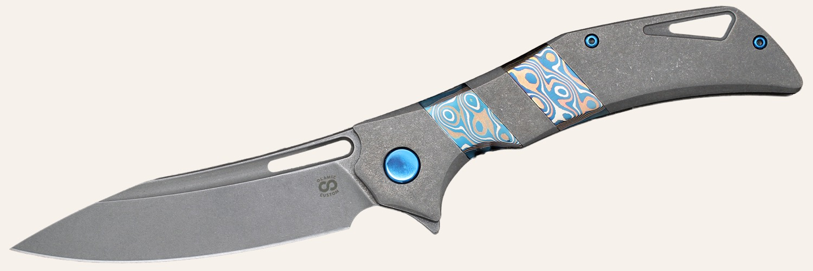
Six Samurai
Six knives on the Wayfarer 247, the Swish, and the Soloist. Numbered One through Five, all sold, and a sixth that the old page marked reserv…
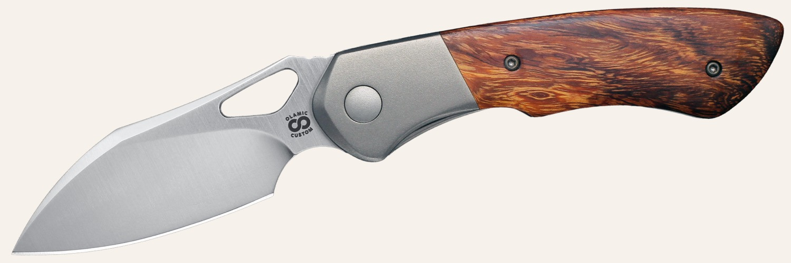
Here Be Dragons
Dragons across the folders. Sold on the old page: two Whippersnappers, a Wayfarer 247, and a Swish. Three spots were still open.…
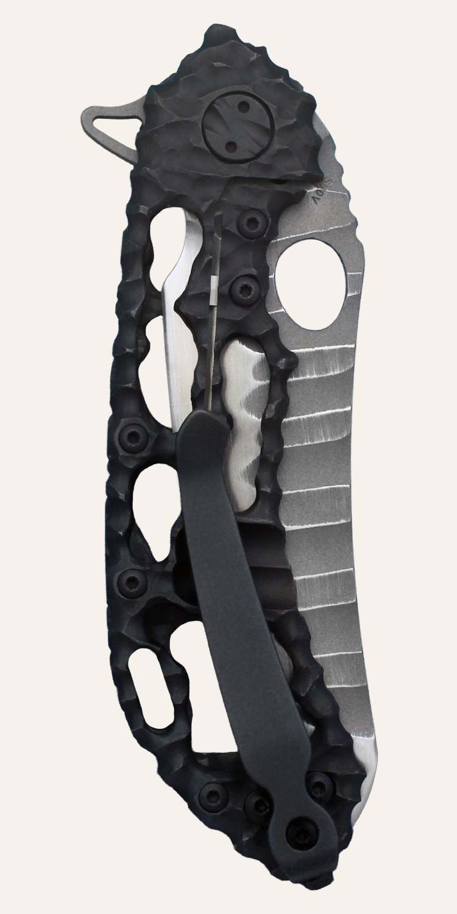
Gilded Creatures
Animals, with one gold inlay for the eye so the set is more than a zoo. Sold: panther, eagle, wolf, tiger, and lynx.…
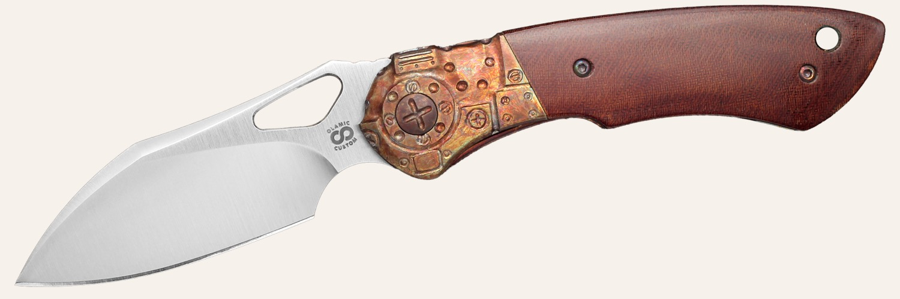
Tree Frogs
Three frogs, three models. A Wayfarer 247, a Busker, and a Whippersnapper. All sold.…
Andrey Kolesnikov has done the carving since December 2016. Read the hand-carved note.